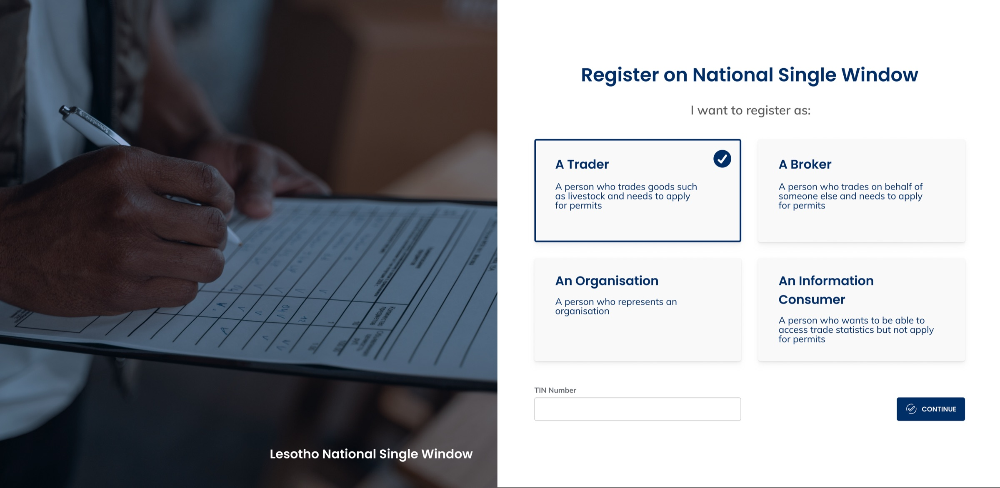

Government
Lesotho National Single Window
Designing a single front door for complex government trade services

Overview
The Lesotho National Single Window brought trade processes that had previously been handled through paper forms, email and separate government systems into one digital platform.
As Lead UX Designer, I worked with a junior designer, business analysts, developers and an experienced team lead to translate complex government processes into usable digital workflows. Our primary users were traders and brokers, who needed to act for themselves or organisations, manage multiple applications, submit documentation and follow processes that could pass between them and government officials several times before completion.
Direct access to end users was limited during the initial design phase, so I worked closely with experienced business analysts and team leads who translated stakeholder requirements and existing government processes into detailed specifications. Later testing exposed places where implemented workflows had become unnecessarily complicated, giving me opportunities to simplify and redesign them.
Adapting an enterprise framework without exposing its complexity
The problem
LNSW was built on Vanguard, an existing case-management platform with a defined multi-pane architecture. Global navigation, work queues, the current task and contextual case controls could all exist simultaneously.
That model worked for experienced case workers, but showing the entire system to traders and brokers would create unnecessary cognitive load for people whose goal was simply to complete a trade process.
What made it hard
Users could also operate in different contexts and have several applications underway at once. The interface needed to answer more than “Which page am I on?” It had to make it clear who the user was acting as, which application needed attention, what stage it had reached and whether anything was currently required from them.
What I chose
We kept the underlying Vanguard interaction architecture while reducing how much of it traders needed to see at once.
Global navigation was substantially collapsed, the My Items/work-queue pane appeared when relevant, the centre remained focused on the task at hand, and secondary case controls stayed contextual rather than competing permanently for attention.
The goal was not to remove the complexity of the underlying system, but to expose it only when it helped the user act.
The inherited Vanguard framework


Turning complex regulatory processes into guided workflows
The problem
A trade application was rarely a single form. Different commodities and government agencies could require different forms, supporting documents, approvals and payments. A trader could have several of these processes running at the same time.
What made it hard
Some steps belonged to the trader while others depended on government officials. The underlying system needed to represent the full government workflow, but traders did not need to understand that machinery.
For them, the experience needed to answer three much simpler questions:
- Where am I?
- What happens next?
- Is there anything I need to do?
What I chose
I wasn’t responsible for defining the regulatory processes themselves. My responsibility was making those processes understandable to the people who had to use them. I worked with business analysts to translate detailed process specifications into a consistent application model.
On the administrative side, processes could be assembled from workflows, forms, supporting-document requirements and agency rules. On the trader side, that complexity became a guided application with clear stages and visible progress.
The same underlying platform could therefore support different regulatory processes without making each process feel like a completely different product.


Making handoffs and waiting states understandable
The problem
Applications frequently moved between traders and government officials. A user might submit information and then be unable to continue until somebody else reviewed documents, approved a step or confirmed a payment.
What made it hard
Without clear states, it was easy for a trader to wonder whether an application had failed, whether they still needed to do something, or whether the government was now responsible for the next step.
Documents also had several possible states: required, uploaded, provided elsewhere, previously processed or under review. Reviews could lead to approval, rejection or suspension, while some payments required proof and subsequent verification.
What I chose
I used explicit stages, state labels and conditional actions to make responsibility visible.
Instead of exposing every possible control, the interface showed the actions relevant to the current state. For example, rejecting an application introduced a reason field, while documents could clearly indicate whether they still needed to be uploaded or had already been provided.
The aim was to make the application feel continuous even when responsibility moved between different people.


Other work across LNSW


Designing for complexity without showing all of it
The National Single Window launched and remains publicly accessible today, with core visual and interaction patterns from this work still visible in the live service.
The project reinforced something that has shaped how I approach complex products ever since: simplifying a system does not necessarily mean removing its complexity. Often the more important design decision is deciding when, where and to whom that complexity needs to be visible.